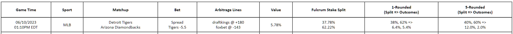

No table showing? Probably no arb opportunities available at the moment. Try again while some games are on. Lines move the most during the games, and sportsbooks don't all mirror each other perfectly, creating these opportunities!
Aight let's make some money.

For convenience let's assume that you have a $100 bankroll to dedicate to a given surebet.
So for this arb you would go to draftkings and place a $37.78 bet on the Tigers to cover the -5.5 pt spread for +180. You would also go on foxbet and place a $62.22 bet on the Diamondbacks with the same spread (+5.5) at -143. With these odds and bet sizes you will guarantee that for EITHER outcome you will net +$5.78.
These bet sizes would be mad sus tho, so I have included a quick glance at the outcomes if you round each to the nearest $1 or $5. As you can see the volatility will increase, but still great return potential and still guaranteed to be a risk-free bet! You could also modify total bankroll for this bet with the same fulcrum split %s to round out your bet sizes while maintaining a fixed return rate.